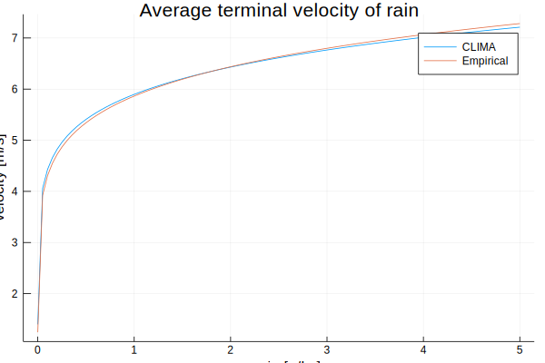
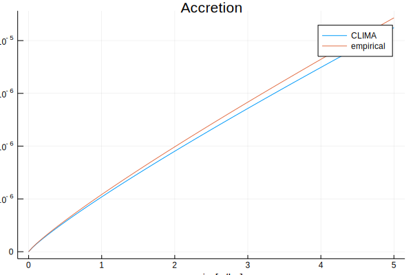
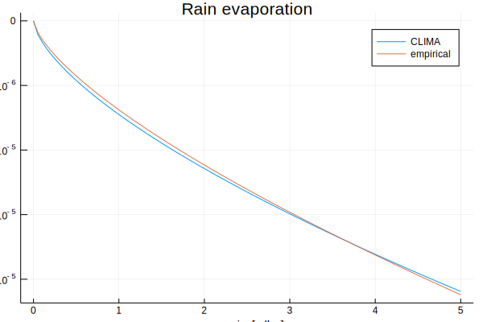

Microphysics Module
The Microphysics module describes warm rain bulk parameterization of cloud microphysical processes. The module describes the warm rain (no ice and snow) formation and is based on the ideas of Kessler 1995.
Parameterized processes include:
- rain sedimentation with mass weighted average terminal velocity,
- condensation/evaporation of cloud water,
- autoconversion,
- accretion,
- evaporation of rain water.
The cloud microphysics variables are expressed as specific humidities:
- q_tot - total water specific humidity,
- q_vap - water vapor specific humidity,
- q_liq - liquid water specific humidity,
- q_rai - rain water specific humidity.
Parameters used in the parameterization are defined in MicrophysicsParameters module. They consist of:
| symbol | definition | units | default value |
|---|---|---|---|
| $n_{0_{MP}}$ | rain drop size distribution parameter | $\frac{1}{m^4}$ | $16 \cdot 10^6$ |
| $\tau_{cond_evap}$ | cloud water condensation/evaporation timescale | $s$ | $10$ |
| $\tau_{acnv}$ | cloud to rain water autoconversion timescale | $s$ | $10^3$ |
| $q_{liq\_threshold}$ | cloud to rain water autoconversion threshold | - | $5 \cdot 10^{-4}$ |
| $E_{col}$ | collision efficiency between rain drops and cloud droplets | - | $0.8$ |
| $C_{drag}$ | rain drop drag coefficient | - | $0.55$ |
| $a_{vent}, b_{vent}$ | rain drop ventilation factor coefficients | - | $1.5 \;$,$\; 0.53$ |
| $K_{therm}$ | thermal conductivity of air | $\frac{J}{m \; s \; K}$ | $2.4 \cdot 10^{-2}$ |
| $\nu_{air}$ | kinematic viscosity of air | $\frac{m^2}{s}$ | $1.6 \cdot 10^{-5}$ |
| $D_{vapor}$ | diffusivity of water vapor | $\frac{m^2}{s}$ | $2.26 \cdot 10^{-5}$ |
Rain drop size distribution
The rain-drop size distribution is assumed to follow Marshall-Palmer distribution (Marshall Palmer 1948 eq. 1):
where:
- $r$ is the drop radius,
- $n_{0_{MP}}$ and $\lambda_{MP}$ are the Marshall-Palmer distribution parameters (twice the values used in the Marshall Palmer 1948, because we use drop radius and not diameter).
Terminal velocity
The terminal velocity of an individual rain drop is defined by the balance between the gravitational acceleration (taking into account the density difference between water and air) and the drag force:
where:
- $g$ is the gravitational acceleration,
- $C_{drag}$ is the drag coefficient,
- $\rho_{water}$ is the density of water,
- $\rho$ is the density of air.
The mass weighted terminal velocity $v_t$ is defined following Ogura and Takahashi 1971
where:
- $F_{rain} = \int_0^\infty n(r) \, m(r) \, v_{drop}(r) \, dr$ is the vertical flux of rain drops,
- $RWC = \int_0^\infty n(r) \, m(r) \, dr = \rho \, q_{rai}$ is the rain water content.
Integrating over the assumed Marshall-Palmer distribution results in
Substituting eq.(\ref{eq:lambda}) and eq.(\ref{eq:frain}) into eq.(\ref{eq:vt}) results in:
where $\lambda_{MP}$ is computed as
The default value of $C_{drag}$ is chosen such that the $v_t$ is close to the empirical terminal velocity formulation in Smolarkiewicz and Grabowski 1996. Assuming a constant drag coefficient is an approximation as it should be size and flow dependent, see drag_coefficient.
using CLIMA.Microphysics
using Plots
# eq. 5d in Smolarkiewicz and Grabowski 1996
# https://doi.org/10.1175/1520-0493(1996)124<0487:TTLSLM>2.0.CO;2
function terminal_velocity_empirical(q_rai::DT, q_tot::DT, ρ::DT, ρ_air_ground::DT) where {DT<:Real}
rr = q_rai / (DT(1) - q_tot)
vel = DT(14.34) * ρ_air_ground^DT(0.5) * ρ^-DT(0.3654) * rr^DT(0.1346)
return vel
end
q_rain_range = range(1e-8, stop=5e-3, length=100)
ρ_air, q_tot, ρ_air_ground = 1.2, 20 * 1e-3, 1.22
plot(q_rain_range * 1e3, [terminal_velocity(q_rai, ρ_air) for q_rai in q_rain_range], xlabel="q_rain [g/kg]", ylabel="velocity [m/s]", title="Average terminal velocity of rain", label="CLIMA")
plot!(q_rain_range * 1e3, [terminal_velocity_empirical(q_rai, q_tot, ρ_air, ρ_air_ground) for q_rai in q_rain_range], label="Empirical")/home/vsts/.julia/packages/GR/TMylY/src/../deps/gr/bin/gksqt: error while loading shared libraries: libQt5Widgets.so.5: cannot open shared object file: No such file or directory
connect: Connection refused
GKS: can't connect to GKS socket application
Did you start 'gksqt'?
GKS: Open failed in routine OPEN_WS
GKS: GKS not in proper state. GKS must be either in the state WSOP or WSAC in routine ACTIVATE_WS
Cloud condensation/evaporation
Condensation and evaporation of cloud water is parameterized as a relaxation to equilibrium value at the current time step.
where:
- $q^{eq}_{liq}$ - liquid water specific humidity in equilibrium,
- $q_{liq}$ - liquid water specific humidity,
- $\tau_{cond\_evap}$ - relaxation timescale (parameter in
MicrophysicsParametersmodule).
Autoconversion
Autoconversion defines the rate of conversion form cloud to rain water due to collisions between cloud droplets. It is parameterized following Kessler 1995:
where:
- $q_{liq}$ - liquid water specific humidity,
- $\tau_{acnv}$ - timescale (parameter in
MicrophysicsParametersmodule), - $q_{liq\_threshold}$ - autoconversion (parameter in
MicrophysicsParametersmodule).
The default values of $\tau_{acnv}$ and $q_{liq\_threshold}$ are based on Smolarkiewicz and Grabowski 1996.
Accretion
Accretion defines the rate of conversion from cloud to rain water resulting from collisions between cloud droplets and rain drops. It is parameterized following Kessler 1995:
where:
- $E_{col}$ is the collision efficiency,
- $v_{drop}$ is defined in eq.(\ref{eq:vdrop}).
Integrating over the distribution and using the RWC to eliminate the $\lambda_{MP}$ results in:
The default value of collision efficiency $E_{coll}$ is set to 0.8 so that the resulting accretion rate is close to the empirical accretion rate in Smolarkiewicz and Grabowski 1996. Assuming a constant $E_{col}$ is an approximation, see for example collision efficiency.
using CLIMA.Microphysics
using Plots
# eq. 5b in Smolarkiewicz and Grabowski 1996
# https://doi.org/10.1175/1520-0493(1996)124<0487:TTLSLM>2.0.CO;2
function accretion_empirical(q_rai::DT, q_liq::DT, q_tot::DT) where {DT<:Real}
rr = q_rai / (DT(1) - q_tot)
rl = q_liq / (DT(1) - q_tot)
return DT(2.2) * rl * rr^DT(7/8)
end
# some example values
q_rain_range = range(1e-8, stop=5e-3, length=100)
ρ_air, q_liq, q_tot = 1.2, 5e-4, 20e-3
plot(q_rain_range * 1e3, [conv_q_liq_to_q_rai_accr(q_liq, q_rai, ρ_air) for q_rai in q_rain_range], xlabel="q_rain [g/kg]", ylabel="accretion rate [1/s]", title="Accretion", label="CLIMA")
plot!(q_rain_range * 1e3, [accretion_empirical(q_rai, q_liq, q_tot) for q_rai in q_rain_range], label="empirical")/home/vsts/.julia/packages/GR/TMylY/src/../deps/gr/bin/gksqt: error while loading shared libraries: libQt5Widgets.so.5: cannot open shared object file: No such file or directory
connect: Connection refused
GKS: can't connect to GKS socket application
Did you start 'gksqt'?
GKS: Open failed in routine OPEN_WS
GKS: GKS not in proper state. GKS must be either in the state WSOP or WSAC in routine ACTIVATE_WS
Rain evaporation
Based on Maxwell 1971 the equation of growth of individual water drop is:
where:
- $q_{vap}^{sat}$ is the saturation vapor specific humidity,
- $L$ is the latent heat of vaporization,
- $K_{thermo}$ is the thermal conductivity of air,
- $R_v$ is the gas constant of water vapor,
- $D_{vapor}$ is the diffusivity of water vapor,
- $S(q_{vap}, q_{vap}^{sat}) = \frac{q_{vap}}{q_{vap}^{sat}} - 1$ is commonly labeled as supersaturation,
- $G(T) = \left(\frac{L}{KT} \left(\frac{L}{R_v T} - 1 \right) + \frac{R_v T}{p_{vap}^{sat} D} \right)^{-1}$ combines the effects of thermal conductivity and water diffusivity.
The rate of $q_{rai}$ evaporation is:
where:
- $F(r)$ is the rain drop ventilation factor.
Following Seifert and Beheng 2006 eq. 24 the ventilation factor is defined as:
where:
- $a_{vent}$, $b_{vent}$ are coefficients,
- $N_{Sc}$ is the Schmidt number,
- $N_{Re}$ is the Reynolds number of a falling rain drop.
The Schmidt number is assumed constant:
where:
- $\nu_{air}$ is the kinematic viscosity of air.
The Reynolds number of a rain drop is defined as:
The final integral is:
Integrating and eliminating $\lambda_{MP}$ using eq.(\ref{eq:lambda}) results in:
where:
- $A = (2 \pi)^{1/2} a_{vent} \left( \frac{\rho}{\rho_{water}} \right)^{1/2}$
- $B = \Gamma\left(\frac{11}{4}\right) 2^{7/16} \pi^{5/16} b_{vent} N_{Sc}^{1/3} v_c(\rho)^{1/2} \left( \frac{\rho}{\rho_{water}} \right)^{11/16}$
The values of $a_{vent}$ and $b_{vent}$ are chosen so that at $q_{tot} = 15 g/kg$ and $T=288K$ the resulting rain evaporation rate is close to the empirical rain evaporation rate from Smolarkiewicz and Grabowski 1996.
using CLIMA.Microphysics
using CLIMA.MoistThermodynamics
using CLIMA.PlanetParameters
using Plots
# eq. 5c in Smolarkiewicz and Grabowski 1996
# https://doi.org/10.1175/1520-0493(1996)124<0487:TTLSLM>2.0.CO;2
function rain_evap_empirical(q_rai::DT, q::PhasePartition, T::DT, p::DT, ρ::DT) where {DT<:Real}
q_sat = q_vap_saturation(T, ρ, q)
q_vap = q.tot - q.liq
rr = q_rai / (DT(1) - q.tot)
rv_sat = q_sat / (DT(1) - q.tot)
S = q_vap/q_sat - DT(1)
ag, bg = 5.4 * 1e2, 2.55 * 1e5
G = DT(1) / (ag + bg / p / rv_sat) / ρ
av, bv = 1.6, 124.9
F = av * (ρ/DT(1e3))^DT(0.525) * rr^DT(0.525) + bv * (ρ/DT(1e3))^DT(0.7296) * rr^DT(0.7296)
return DT(1) / (DT(1) - q.tot) * S * F * G
end
# example values
T, p = 273.15 + 15, 90000.
ϵ = 1. / molmass_ratio
p_sat = saturation_vapor_pressure(T, Liquid())
q_sat = ϵ * p_sat / (p + p_sat * (ϵ - 1.))
q_rain_range = range(1e-8, stop=5e-3, length=100)
q_tot = 15e-3
q_vap = 0.15 * q_sat
q_ice = 0.
q_liq = q_tot - q_vap - q_ice
q = PhasePartition(q_tot, q_liq, q_ice)
R = gas_constant_air(q)
ρ = p / R / T
plot(q_rain_range * 1e3, [conv_q_rai_to_q_vap(q_rai, q, T, p, ρ) for q_rai in q_rain_range], xlabel="q_rain [g/kg]", ylabel="rain evaporation rate [1/s]", title="Rain evaporation", label="CLIMA")
plot!(q_rain_range * 1e3, [rain_evap_empirical(q_rai, q, T, p, ρ) for q_rai in q_rain_range], label="empirical")/home/vsts/.julia/packages/GR/TMylY/src/../deps/gr/bin/gksqt: error while loading shared libraries: libQt5Widgets.so.5: cannot open shared object file: No such file or directory
connect: Connection refused
GKS: can't connect to GKS socket application
Did you start 'gksqt'?
GKS: Open failed in routine OPEN_WS
GKS: GKS not in proper state. GKS must be either in the state WSOP or WSAC in routine ACTIVATE_WS
Functions
CLIMA.Microphysics.terminal_velocity — Function.terminal_velocity(q_rai, ρ)where:
q_rai- rain water specific humidityρ- density of air
Returns the mass weighted average rain terminal velocity assuming Marshall Palmer 1948 distribution of rain drops.
CLIMA.Microphysics.conv_q_vap_to_q_liq — Function.conv_q_vap_to_q_liq(q_sat, q)where:
q_sat- PhasePartition at equilibriumq- current PhasePartition
Returns the q_liq tendency due to condensation/evaporation. The tendency is obtained assuming a relaxation to equilibrium with constant timescale.
CLIMA.Microphysics.conv_q_liq_to_q_rai_acnv — Function.conv_q_liq_to_q_rai_acnv(q_liq)where:
q_liq- is the liquid water specific humidity
Returns the q_rai tendency due to collisions between cloud droplets (autoconversion) parametrized following Kessler 1995.
CLIMA.Microphysics.conv_q_liq_to_q_rai_accr — Function.conv_q_liq_to_q_rai_accr(q_liq, q_rai, ρ)where:
q_liq- is the liquid water specific humidityq_rai- is the rain water specific humidityρ- is the density of air
Returns the q_rai tendency due to collisions between cloud droplets and rain drops (accretion) parametrized following Kessler 1995.
CLIMA.Microphysics.conv_q_rai_to_q_vap — Function.conv_q_rai_to_q_vap(q_rai, q, T, p, ρ)where:
- q_rai - rain water specific humidity
- q - current PhasePartition
- T - temperature
- p - pressure
- ρ - air density
Returns the q_rai tendency due to rain evaporation. Parameterized following Smolarkiewicz and Grabowski 1996.
References
@article{GrabowskiandSmolarkiewicz_1996, author = {Grabowski, Wojciech W. and Smolarkiewicz, Piotr K.}, title = {Two-Time-Level Semi-Lagrangian Modeling of Precipitating Clouds}, journal = {Monthly Weather Review}, volume = {124}, number = {3}, pages = {487-497}, year = {1996}, doi = {10.1175/1520-0493(1996)124<0487:TTLSLM>2.0.CO;2}}
@article{Kessler_1995, author = {Kessler, E.}, title = {On the continuity and distribution of water substance in atmospheric circulations}, journal = {Atmospheric Research}, volume = {38}, number = {1}, pages = {109 - 145}, year = {1995}, doi = {10.1016/0169-8095(94)00090-Z}}
@book{Mason_1971, author = {Mason, B. J.}, title = {The Physics of Clouds}, publisher = {Oxford Univ. Press}, year = {1971}}
@article{MarshallandPalmer_1948, author = {Marshall, J. S. and Palmer, W. Mc K.}, title = {The distribution of raindrops with size}, journal = {Journal of Meteorology}, volume = {5}, number = {4}, pages = {165-166}, year = {1948}, doi = {10.1175/1520-0469(1948)005<0165:TDORWS>2.0.CO;2}}
@article{OguraandTakahashi_1971, author = {Oqura, Yoshimitsu and Takahashi, Tsutomu}, title = {Numerical simulation of the life cycle of a thunderstorm cell}, journal = {Monthly Weather Review}, volume = {99}, number = {12}, pages = {895-911}, year = {1971}, doi = {10.1175/1520-0493(1971)099<0895:NSOTLC>2.3.CO;2}}
@article{SeifertandBeheng_2006, author={Seifert, A. and Beheng, K. D.}, title={A two-moment cloud microphysics parameterization for mixed-phase clouds. Part 1: Model description}, journal={Meteorology and Atmospheric Physics}, year={2006}, volume={92}, number={1}, pages={45–66}, doi={10.1007/s00703-005-0112-4}}